팝콘 한 봉지, 취향 한 스푼.
오늘은 내 맘대로 고른 영화들.
이번 기획 「역시 난 비주류야, 킥킥」은 한 영화 월드컵의 대진표에서 출발했습니다. 누군가에게는 인생 최고의 명작이 다른 누군가에게는 도무지 이해할 수 없는 영화가 되기도 합니다. 때로는 낯설고 불편한 작품에 끌리고, 때로는 모두가 사랑하는 이야기에서 깊은 감동을 얻습니다. 영화의 매력은 정답이 없다는 데 있습니다.
눈치채셨겠지만 이 중에는 전 세계가 사랑한 영화도 슬쩍 섞여 있습니다. 비주류를 자처해도 취향은 가끔 대세와 손을 잡는 법이니까요. 어디서부터가 비주류인지 고민하며 한 편씩 고르다 보면, 어느새 당신만의 대진표가 만들어져 있을지도 모릅니다. 이번 겨울, 중앙도서관에서 가장 삐딱하고 가장 솔직한 영화 여행을 떠나 보세요.
진실
파동
한 방
항해자들
논쟁은 깊어진다

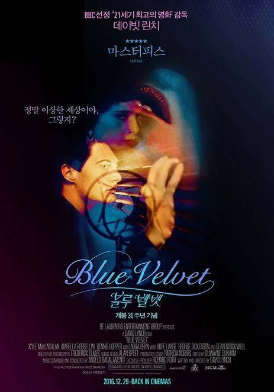
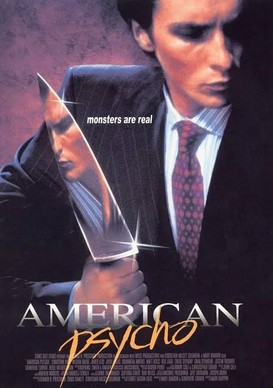
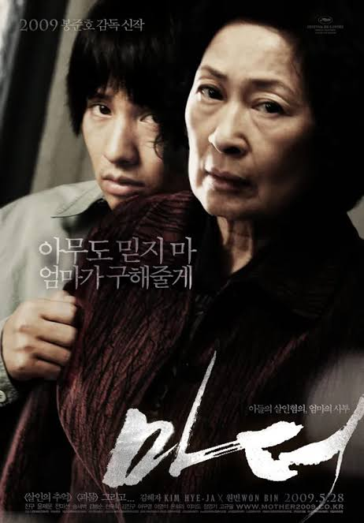

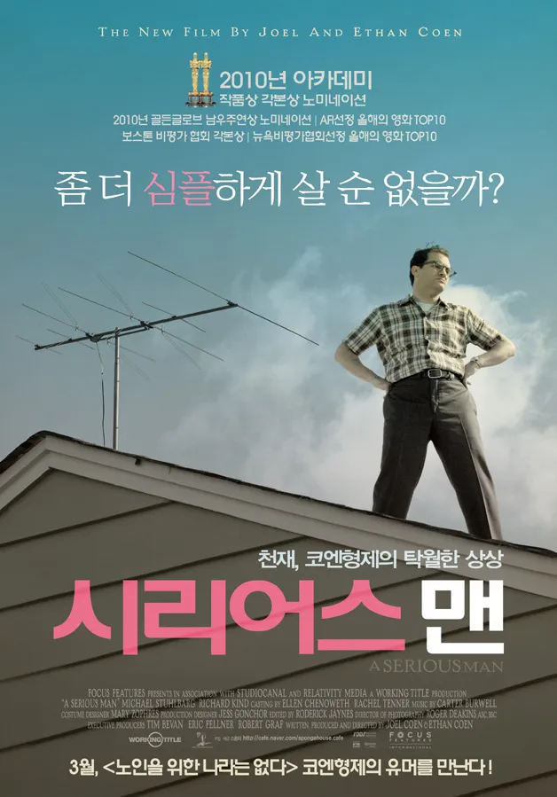
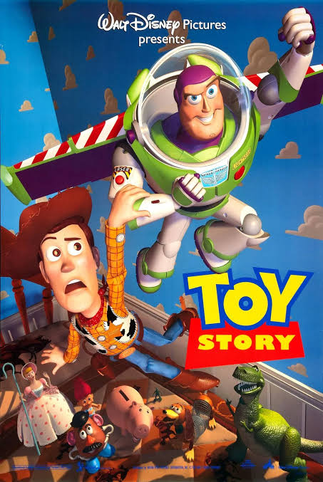
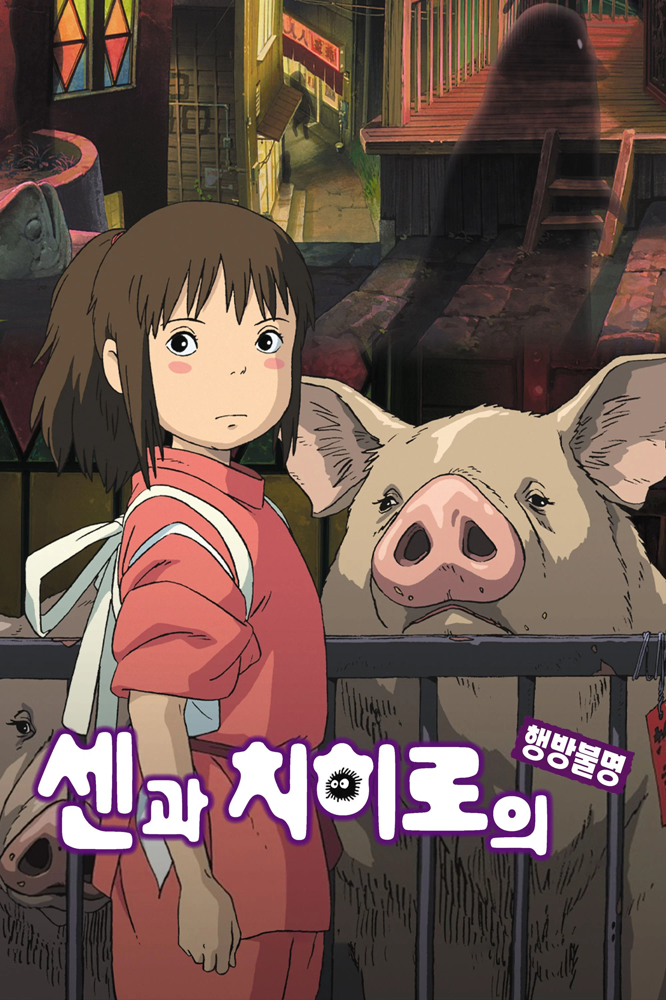

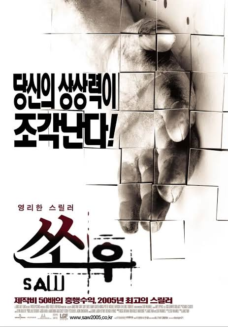
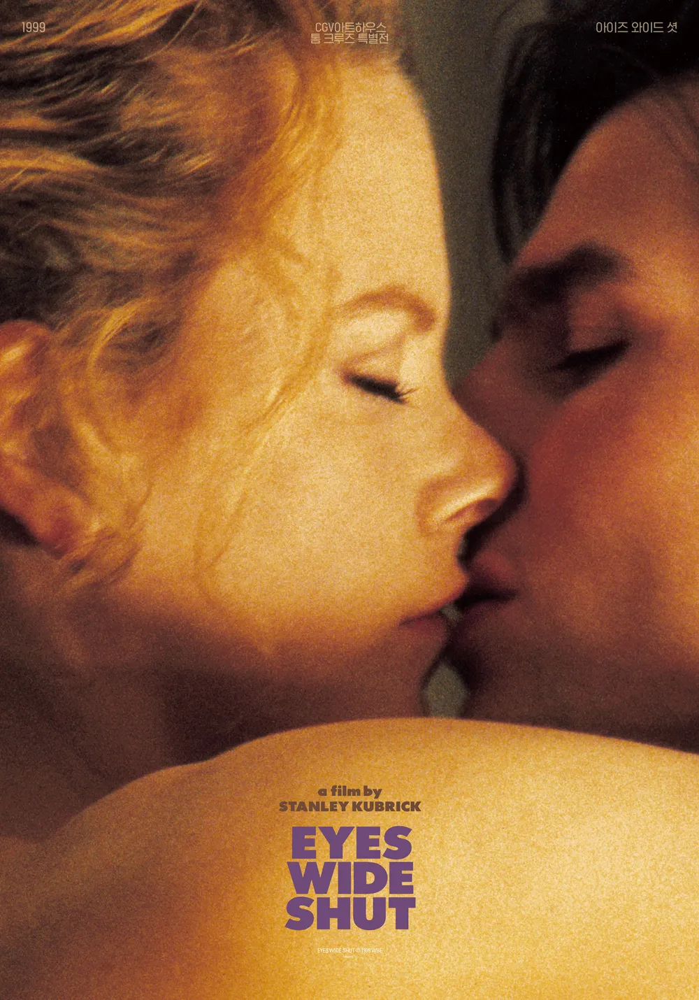

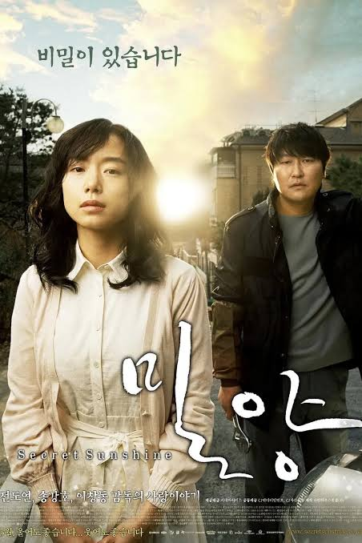
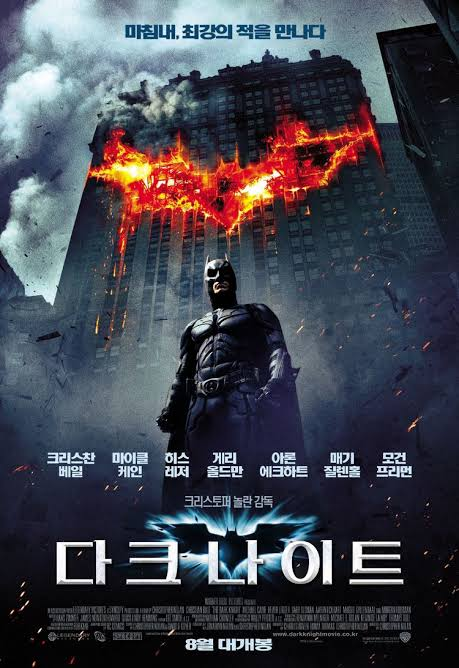
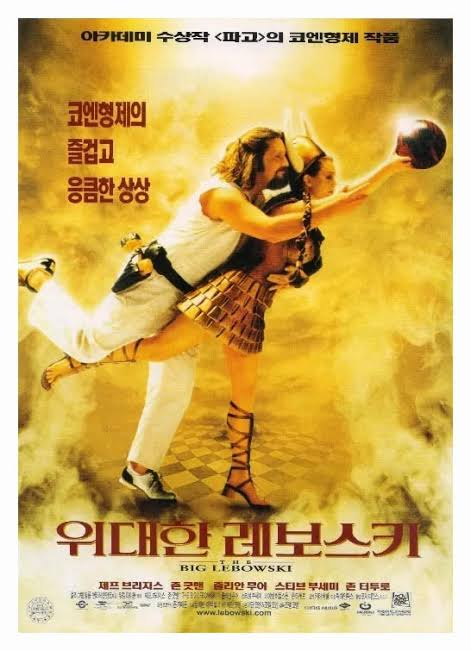

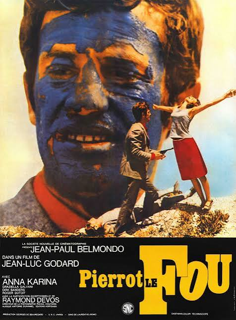
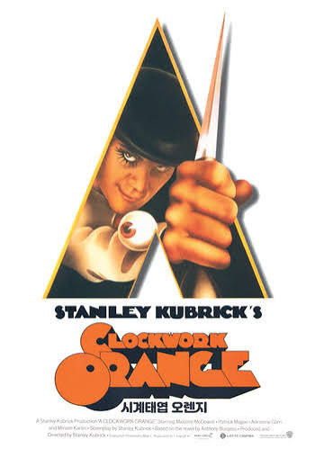
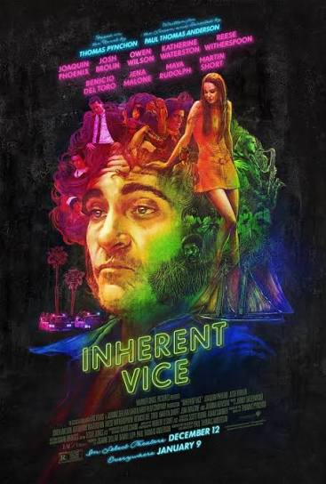
온라인에서 목록을 확인하고, 도서관에서 영화를 만나보세요
추천DVD 20편의 소장 위치와 대출 상태는 도서관 홈페이지에서 확인할 수 있습니다.
중앙디지털도서관 1층
추천DVD 서가에서 영화를 직접 만나보세요.
2026년 11월 1일–12월 31일
이번 추천 DVD는 인간의 어두운 내면을 들여다보는 영화부터 마음을 울리는 이야기, 강렬한 장르적 쾌감을 선사하는 작품, 세상과 불화하는 자들의 초상, 쉽게 설명하기 어려운 독특한 영화까지 다섯가지 주제로 스무 편을 선정했습니다.
영화에는 정답이 없습니다. 취향은 갈릴 수 있고, 감상은 다를 수 있습니다. 누군가의 인생 영화가 나에게는 그저 그런 영화일 수도, 반대로 아무도 알아주지 않는 작품이 나만의 보물이 될 수도 있습니다.
이번 겨울, 남들의 평가에서 잠시 벗어나 나만의 영화 취향을 발견해 보세요. 어쩌면 당신도 모르게 웃으며 이렇게 말하게 될지 모릅니다.
“역시 난 비주류야. 킥킥.”
— 제주대학교 중앙도서관